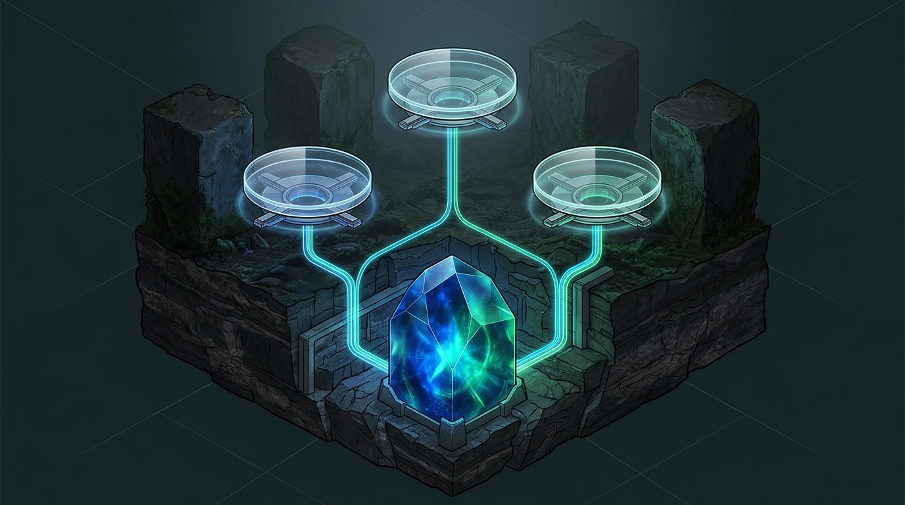

The practical visual field guide to running parallel AI coding agents at full speed without file overwrites, port clashes, corrupted lockfiles, or rogue Git commands.
.git Plumbing
1-Agent-1-Branch Discipline
Env, Port & DB Isolation
PreToolUse Safety Hooks
Serial Human + CI Merge Gate
Claude, Antigravity, Orca & Cursor
.git store.node_modules, .env.local, deterministic ports 3001..3009, and test databases.PreToolUse hooks, pre-commit door inspectors, OS sandboxes, and a serial PR merge gate.
Git protects committed history inside .git, but gives your on-disk working tree zero concurrency protection. Pointing two autonomous coding agents at one folder turns shared mutable files into silent data loss before a commit ever exists.
Agent A edits checkout.ts and stages it; 20 seconds later Agent B writes a stale edit plan over the same file—erasing A's work before any commit records it.
While Agent A runs a 90-second test suite, Agent B runs git checkout -b hotfix. Both agents now fight over one HEAD, staging index, and half-rebased tree.
Concurrent npm install or shared Python .venv editable installs corrupt node_modules and generate 5,000-line lockfile conflicts.
Two dev servers crash with EADDRINUSE on port 3000, or two integration suites truncate the same users table in a shared local database.
git checkout -- . & Feedback Repair Loops)git checkout -- . or widens types to any to force tests green—destroying sibling work in an expensive token-burning loop.
.git Warehouse, Isolated Agent WorkshopsNot every parallel task needs a full virtual machine—and "just clone the repo five times" creates silent fetch drift and gigabytes of wasted history. Use this matrix to match isolation weight to task risk.
| Mechanism | Spawn Speed | Disk Footprint | Runtime & Security Boundary | Best Fit |
|---|---|---|---|---|
git worktreeRecommended Default |
0.2–2 sec checkout (+ fast hardlinked pnpm install) |
Minimal 1 shared .git object store; working files only |
Separate files, index & branch; pair w/ per-folder PORT, DB & OS sandbox |
Daily 2–6 agent parallel feature builds, bugfixes, refactors & detached PR reviews |
Full git cloneSeparate Local Repo |
15–120 sec Full network or local history copy |
Heavy (N × repo) 5 agents on a 2 GB repo = 10+ GB duplicated |
Separate .git config/remotes, but no automatic branch-lock across clones |
Testing destructive Git history rewrites (filter-repo) or alternate remote URLs |
| Worktree + Container Docker / Devcontainer |
3–15 sec Cached base image + bind mount |
Moderate Shared Docker layers + per-worktree volume |
Kernel namespace isolation: hides ~/.ssh, ~/.aws, ports & host filesystem |
Unattended overnight runs, auditing untrusted packages, or running risky migrations |
| Cloud Sandbox VM Actions VM / MicroVM |
10–45 sec Ephemeral cloud image boot |
Zero local disk Runs entirely off your laptop |
Hard hardware/VM boundary + egress firewall & repo-scoped token | Async background fleets (20+ tickets), heavy CI test sharding, or mobile dispatch |
git clone" BackfiresRunning git fetch in Clone A leaves Clones B and C building on stale 3-day-old main commits, creating avoidable merge conflicts.
Two separate clones happily check out the exact same branch name locally and only collide when both try to push.
git worktree list inventories every active agent workshop in one command; scattered clones hide orphaned work across folders.
Verify git --version (supports lock, move, repair, and --porcelain), plus jq for parsing JSON hook payloads and gh auth status for PR gates.
Guardrails can only enforce checks that exist. Ensure lint, typecheck, and unit test scripts run cleanly and exit non-zero on failure.
maingit pull --ff-only && npm test in your human checkout before spawning worktrees. Launching four agents from a broken baseline guarantees all four will burn their first hour diagnosing and divergently "fixing" a bug none of them caused!
Keep linked worktrees as sibling folders beside your main repository (../wt-auth, ../wt-billing)—or inside a gitignored .worktrees/ directory—so file watchers, bundlers, and search tools never index duplicate trees.
git push --force origin maintsc --noEmit PASS • vitest 42/42 PASS (1.8s)
3
:3000app_dev
:3001app_test_wt1
:3002app_test_wt2
../wt-auth next to checkout-api/ prevents nested tsconfig.json, ESLint, or bundler crawl issues.git worktree list -v): Shows every directory, exact commit SHA, checked-out branch, and active locked ownership flag.Stop Gate: Blocks an agent from declaring victory until tsc --noEmit and fast unit tests actually pass inside its worktree.3001, 3002) and isolated database schema so live servers never clash..git & ~/.ssh protected) and repo-committed hook enforcement.PreToolUse Real-Time Intercept: Catches destructive shell commands before execution via exit code 2 and teaches the agent the safe path.main while completed agent branches land one PR at a time through CI.
../wt-auth. If your harness stores worktrees inside the repo (such as .worktrees/ or .claude/worktrees/), verify git check-ignore -q .worktrees passes before spawning so you never accidentally commit an entire nested checkout!
When you run git worktree add, Git does not duplicate your repository history. Instead, the new folder gets a tiny 1-line .git pointer file linking back to .git/worktrees/<name>/ for its private HEAD and staging index.

GIT_COMMON_DIR): Commits, blobs, branches, tags, remotes & 1 fetch for all.GIT_DIR): Per-worktree HEAD, staging index, and working files on disk.Encode owner + task in both places: folder ../<repo>-<agent>-<slug> (or ../wt-<slug>) and branch <agent>/<slug>. Keep a human-only checkout permanently parked on main.
Always merge (or abandon) first → worktree remove second → branch -d last. Deleting a branch before removing its worktree orphans commits!
main in a second worktree and Git halts immediately: fatal: 'main' is already checked out. Celebrate that error! Git natively enforces the 1-Agent-1-Branch rule so two worktrees can never silently advance the same branch tip behind each other's backs. Never pass -f to override it; for read-only inspection, pass --detach instead.
A fresh git worktree add checks out tracked source files only. Everything gitignored—dependencies, secret .env files, build caches, ports, and test databases—must be provisioned per workshop or agents will still collide at runtime.
Never share a parent node_modules or shared Python virtualenv across worktrees:
pnpm install --frozen-lockfile --prefer-offline hardlinks from one global content store in ~2 seconds!npm ci (never bare npm install, which mutates package-lock.json).python3 -m venv .venv inside each worktree—an editable pip install -e . in a shared venv points imports at whichever folder installed last!.env.local ProvisioningDo not let agents symlink ../myapp/.env (one edit mutates every sibling):
.env.local into the new worktree during bootstrap, then append workshop-specific overrides (PORT, DATABASE_URL, NEXT_PUBLIC_APP_URL).cp -c performs instant copy-on-write cloning even for large local fixture folders.3001..3009)Reserve :3000 for your human main checkout and assign each agent slot a fixed offset:
1 → App PORT=3001, API 4001, Vite HMR 24679.2 → App PORT=3002, API 4002, Vite HMR 24680.PORT directly into the worktree's .env.local so every terminal command inherits it automatically.TMPDIRParallel integration tests sharing one DB cause phantom flakes at midnight:
./.tmp/test.db inside the worktree—instant zero-config isolation!postgres://localhost/app_test_wt1) and run migrations on bootstrap.TMPDIR="$PWD/.tmp" so test runners never clobber /tmp sockets.git worktree add| Resource | Included Automatically? | Safe Fleet Bootstrap Rule |
|---|---|---|
src/, AGENTS.md, .claude/settings.json |
Yes (Tracked in Git) | Commit rules, skills, and hook configs to main so every worktree inherits them automatically. |
node_modules/, .venv/, .husky/_/ |
No (Gitignored) | Run pnpm install --frozen-lockfile / npm ci (also regenerates Husky v9 shims!). |
.env.local, PORT, Test DB |
No (Local runtime) | Generate via a 1-command bootstrap script assigning unique PORT + DATABASE_URL per slot. |
Polite prompt instructions eventually lose to a confused model at step 60. Guard every workshop at two distinct doorways: an agent-native PreToolUse hook that blocks dangerous commands before execution, and a Git pre-commit hook that blocks broken code before packaging.
../wt-$SLUG from green main, copy .env.local, set PORT=$((3000+SLOT)), run pnpm i --prefer-offline.SessionStart, inject exact $PWD, assigned branch name, and assigned port/DB into agent memory.PreToolUse (Edit|Write|Bash), resolve target paths and exit 2 if anything escapes $WORKTREE_ROOT.git reset --hard, push --force, checkout main, clean -fd, and --no-verify with exit 2..githooks/pre-commit (lint + tsc --noEmit + .env secret block) + Stop hook running fast tests.
PreToolUse Path-Fence & Destructive-Git Guard (.claude/hooks/fleet-guard.sh)1 Trap!exit 1 is treated as a non-blocking script error and the dangerous command still runs! Always return exit 2 (with clear corrective instructions on stderr) to hard-block execution.
echo '{"tool_input":{"command":"git reset --hard"}}' | .claude/hooks/fleet-guard.sh; echo $? → must print 2!
The secret to landing five parallel agent branches without breaking main is simple: build in parallel, merge serially one PR at a time. Every remaining branch rebases onto the newly updated main inside its own workshop before advancing.
PreToolUse, pre-commit, clean CI runner & detached human review.--detach WorktreeNever switch branches in your human checkout. Run git worktree add ../wt-review --detach origin/agent-a/oauth, run pnpm i && pnpm test, and audit test diffs for softened assertions or widened any types.
Enable GitHub Require branches to be up to date + CODEOWNERS on .claude/ and .githooks/. Run gh pr merge 41 --squash --delete-branch to collapse noisy micro-commits into one clean commit.
Inside ../wt-billing, run git fetch origin && git rebase origin/main. If shared barrel exports or routes conflict, ask that workshop's owning agent to reconcile its change against upstream main, then re-run tests!
Pull fresh main locally, then retire merged workshops: git worktree unlock ../wt-auth && git worktree remove ../wt-auth, git branch -d agent-a/oauth, and git worktree prune -n (dry run) → -v.
git -Cmain folder and inspect or push any sibling workshop without cd-ing back and forth: git -C ../wt-auth log --oneline main..HEAD or git -C ../wt-auth status -s.
Keep these five battle-tested patterns handy whenever you want to parallelize a multi-slice roadmap, compare competing designs side by side, or ship an urgent hotfix without disturbing a running agent.
| Scenario | Exact Commands / Script Pattern | Why It Works Safely |
|---|---|---|
| 1. 3-Slice Parallel Feature Build DB + API + UI in parallel |
git worktree add ../wt-schema -b ag1/schema maingit worktree add ../wt-api -b ag2/api-routes maingit worktree add ../wt-ui -b ag3/react-views mainAssign disjoint directories per prompt; merge schema → api → ui.
|
Scoping each agent to disjoint folders eliminates 90% of semantic merge conflicts up front while multiplying throughput 3x. |
| 2. Competing Architecture Bake-Off Race 2 designs on 1 spec |
git worktree add ../wt-redis -b exp/redis-cache maingit worktree add ../wt-sqlite -b exp/sqlite-lru mainGive both agents the exact same benchmark test; run servers on :3001 & :3002; merge winner, remove + branch -D loser.
|
Lets you evaluate real latency, code clarity, and bundle size across two live implementations before committing to one. |
| 3. Urgent Prod Hotfix Mid-Run Zero stashing or pausing |
Leave overnight agent humming in ../wt-refactor.git fetch origingit worktree add ../wt-hotfix -b fix/null-session origin/mainPatch, test on :3009, push PR, merge, then git worktree remove ../wt-hotfix.
|
You never touch git stash or interrupt a 45-minute autonomous refactor; the overnight agent simply rebases later. |
| 4. Read-Only PR & Security Audit Zero branch claim |
git fetch origin pull/108/head:pr-108git worktree add ../wt-audit --detach pr-108cd ../wt-audit && pnpm i --frozen-lockfile && codex --sandbox read-only
|
--detach + read-only OS sandbox lets a reviewer agent inspect and test untrusted PR code without touching your checkout. |
5. One-Command Fleet Bootstrapperscripts/wt-spawn.sh |
SLOT=$1; SLUG=$2; DIR="../wt-${SLUG}"; PORT=$((3000+SLOT))git worktree add "$DIR" -b "agent-${SLOT}/${SLUG}" maincp .env.local "$DIR/.env.local" && echo "PORT=$PORT" >> "$DIR/.env.local"(cd "$DIR" && pnpm i --frozen-lockfile --prefer-offline)git worktree lock "$DIR" --reason "slot-$SLOT / $SLUG"
|
Reduces workshop creation—branch, lock, secrets, unique port, and dependencies—to one repeatable 4-second command: ./scripts/wt-spawn.sh 1 auth. |
git worktree list --porcelain (or compare against a .fleet/registry.tsv log) every Friday afternoon. Any unlocked worktree whose branch already merged into main can be reclaimed in seconds—keeping disk space and mental overhead crystal clear.
Before running manual git worktree add commands, check whether your coding harness manages worktrees natively. Built-in flags automatically place folders, track session state, and clean up idle trees—never fight your harness!
| Tool / Harness | Native Worktree Command / Config | Built-In Guardrails & Key Gotchas |
|---|---|---|
| Claude Code Anthropic CLI & IDE |
claude --worktree feat-auth (-w)claude -w feat-auth --tmuxIn-session tool: EnterWorktree
|
Creates isolated worktrees under .claude/worktrees/; supports WorktreeCreate / PreToolUse / Stop hooks in committed .claude/settings.json + macOS Seatbelt / Linux bubblewrap /sandbox. |
| Google Antigravity App, IDE & agy CLI |
Subagents: Workspace: "share" (worktree)Swarms ( /teamwork): workspace: "share"Full clone mode: workspace: "branch"
|
"share" gives each parallel author its own working copy sharing .git; read-only researchers keep "inherit". proceed-in-sandbox + Non-Workspace File Access deny fences paths. |
| Orca Multi-Agent Orchestrator |
orca worktree create • orca worktree listorca worktree ps • orca worktree rm
|
Manages child worktrees, dedicated PTY terminals, sleeping recipe VMs, and cross-agent handoffs with live status tracking via orca worktree ps --json. |
| Cursor Parallel Background/Local |
Parallel Agent Worktrees UI +.cursor/worktrees.json (setup steps)
|
Automates dependency install & .env copy per spawned worktree. Commit .cursor/permissions.json with strict Allowlist mode (prefix-matched; deny wins). |
| Codex CLI & aider Terminal Agents |
Pair w/ wt-spawn.sh, then launch:codex --sandbox workspace-writeaider --git-commit-verify --auto-test
|
Codex's workspace-write keeps .git read-only at the OS kernel level! In aider, always pass --git-commit-verify (its default skips pre-commit hooks). |
Inside scripts or skills, compare git rev-parse --git-dir vs. --git-common-dir (and verify --show-superproject-working-tree is empty to rule out submodules). If they differ, the agent is already inside an isolated worktree—don't nest another!
--dangerously-skip-permissions, --yolo, and Run Everything let a confused or prompt-injected agent overwrite .git, delete hooks, and read ~/.ssh. Reserve them strictly for disposable, credential-free containers!
Here is how every piece in this guide locks together into one repeatable engineering pipeline—turning three concurrent tickets into three clean, linear commits on main with zero lost work.
| Timeline Beat | What Happens Across the Fleet | Safety Mechanism in Action |
|---|---|---|
| 09:00 • Spawn | Run wt-spawn.sh for wt-totals (:3001), wt-discounts (:3002), and wt-docs (:3003) off green main. |
Shared .git spawns all 3 in <10s; git worktree lock tags each owner and ticket. |
| 09:22 • Mid-Run | Agent 2 hits a lint error and tries git commit --no-verify; Agent 1 runs integration tests against app_test_wt1. |
PreToolUse exits 2, forcing Agent 2 to fix the lint error properly; DB isolation prevents test crossfire. |
| 09:45 • Merge #1 | wt-totals passes its Stop gate; PR #1 passes CI and squash-merges into main (updating src/index.ts). |
Branch protection requires PR + green status checks; human checkout never left main. |
| 09:52 • Rebase #2 | Inside wt-discounts, run git fetch && git rebase origin/main; src/index.ts conflicts on barrel exports. |
Agent 2 reconciles both export lines inside wt-discounts, re-runs pnpm test, pushes, and merges cleanly! |
| 10:05 • Cleanup | PR #3 (wt-docs) rebases with zero conflicts and merges; all 3 workshops are unlocked, removed, and pruned. |
git worktree list returns to a single clean [main] line with 3 crisp squashed commits in history. |
Ninety percent of worktree hiccups diagnose themselves with git worktree list -v and git -C <path> status. Use this table for 10-second recoveries when an agent or folder misbehaves.
| Error / Symptom | Root Cause & 10-Second Fix |
|---|---|
fatal: 'branch' is already checked out at '...' |
Git's Iron Rule protecting you! Create a distinct branch (git worktree add ../wt-new -b agent-c/task main) or pass --detach for read-only review. Never pass -f. |
Deleted folder with rm -rf; Git still lists it / blocks branch |
Orphaned metadata in .git/worktrees/. Run git worktree unlock <path> (if locked), preview with git worktree prune -n, then clear with git worktree prune -v. |
Ran mv on a worktree; Git says not a git repository |
Moving by hand broke the absolute path contract inside .git. From your main repo run git worktree repair <new-path> (next time use git worktree move). |
Error: listen EADDRINUSE: address already in use :::3000 |
Two workshops bound default port 3000. Write a unique PORT=3001 / 3002 into each worktree's .env.local so dev servers and Playwright runs stay in separate lanes. |
PreToolUse hook prints an error, but command still runs! |
Your script exited with 1 (non-blocking warning). Change the block branch to exit 2 (or emit JSON permissionDecision: "deny") and verify chmod +x. |
Husky pre-commit fires in main, silent in worktrees |
Relative core.hooksPath (.husky/_) is gitignored in fresh checkouts. Run npm ci / pnpm install inside the worktree so the prepare script regenerates shims. |
5,000-line package-lock.json merge conflict at PR time |
Agents ran bare npm install concurrently. Standardize on npm ci / pnpm i --frozen-lockfile; to fix now, merge package.json, run npm install once, and commit. |
main: git pull --ff-only && npm test passes before any branch sprouts; humans stay on main, agents never do.PreToolUse hook returns exit 2 on cross-folder edits, reset --hard, and --no-verify.--worktree, share, orca) or sibling git worktree add -b + lock.workspace-write / /sandbox); zero --yolo flags on credentialed hosts.pnpm i / .venv, copied .env.local, unique PORT, and separate test DB.remove + prune.